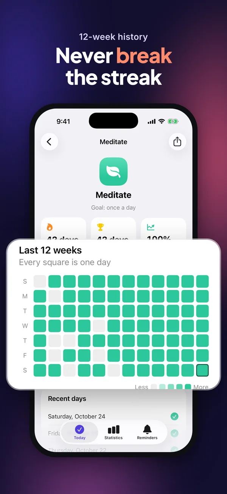
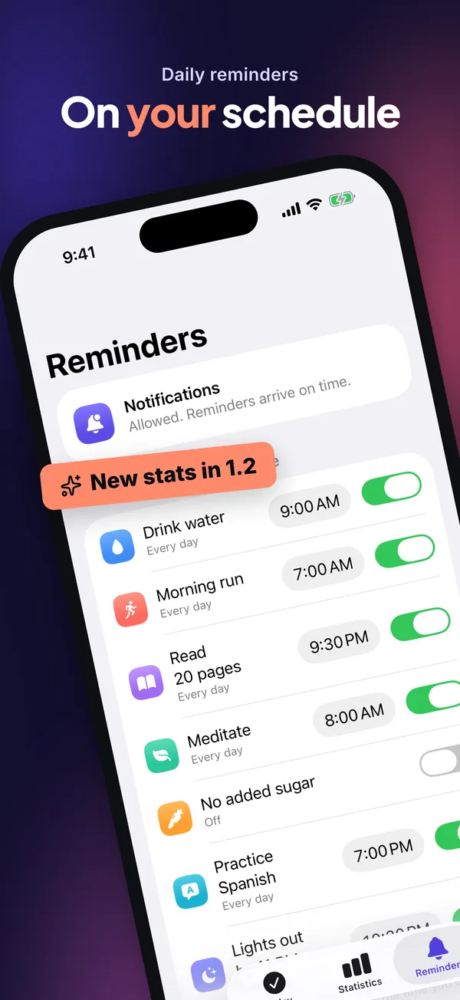
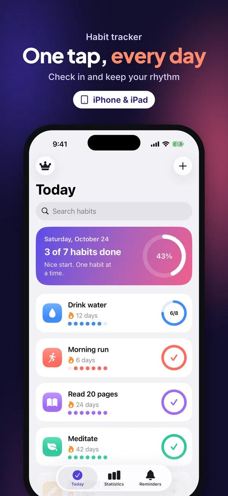
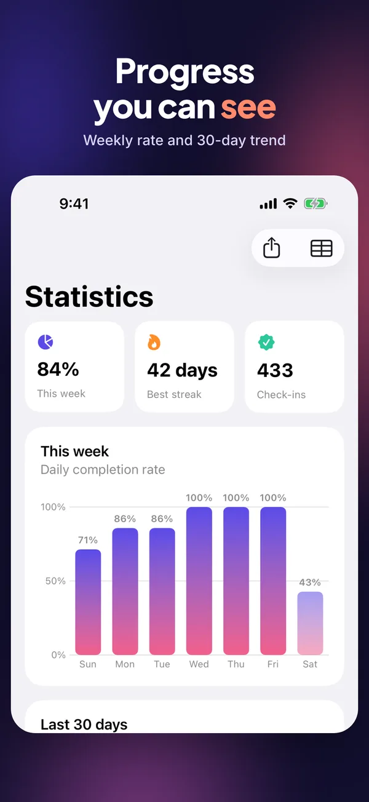
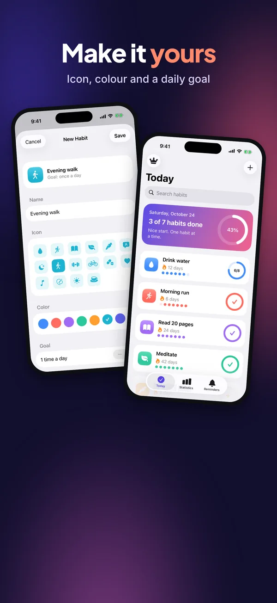
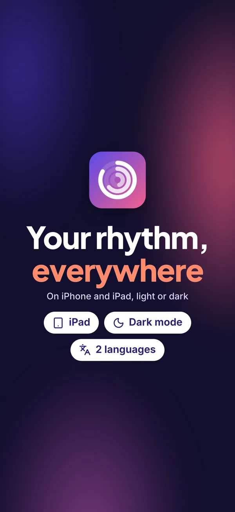
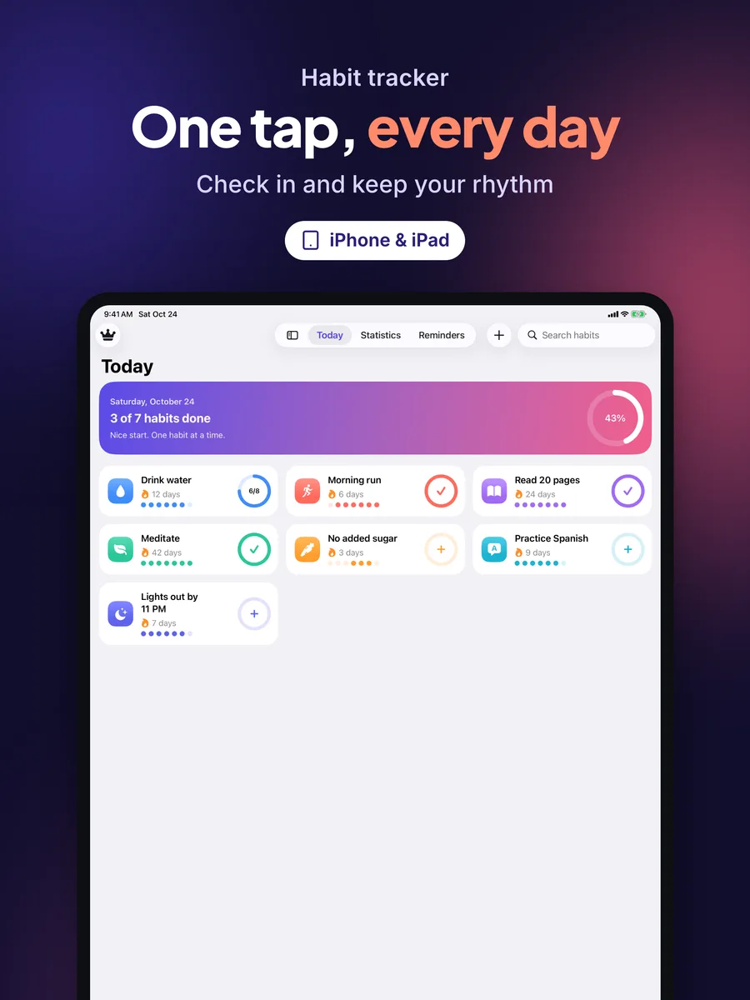
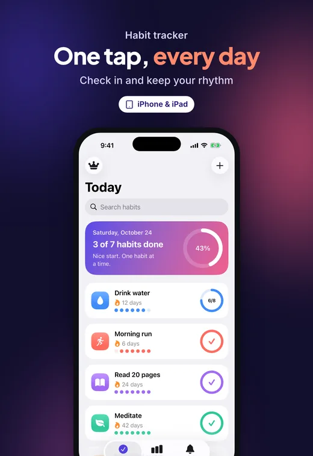

Metadata that fits
Name, subtitle, keyword field, description, promo text and What's New per locale. Grapheme and UTF-8 byte counting — alışkanlık is 10 characters but 13 bytes — no duplicates across fields, no competitor brands.
Open source · MIT · Claude Code skill
Vitrin reads your iOS project, studies the competition and produces ASO-ready metadata, screenshots and animated App Previews — validated against Apple's current rules and uploaded with fastlane. You approve; it does the busywork.
claude plugin install vitrin --marketplace ardasnturk/vitrin


Every image below was rendered by Vitrin for Ritim, the sample SwiftUI app in the repo — from real simulator captures, in English and Turkish.




Creative choices — copy, keywords, art direction, shot list, video plan — are written by Claude into schema-checked JSON. Everything deterministic is a TypeScript CLI you can read, test and run in CI.
Parses .pbxproj, Info.plist, entitlements, String Catalogs, asset catalogs, StoreKit and code signals into an app profile where every feature points to a file.
Searches the App Store per storefront, reads competitors' screenshots with on-device OCR, extracts palettes and scores keyword candidates.
Claude writes localized metadata and picks an art direction that stands out from competitors. Vitrin captures the simulator and renders screenshots, creatives and App Previews.
Byte-accurate limits, forbidden terms, claim ↔ evidence, pixel sizes, video specs. Then a dry-run plan, your explicit approval, fastlane upload and a read-back.
Name, subtitle, keyword field, description, promo text and What's New per locale. Grapheme and UTF-8 byte counting — alışkanlık is 10 characters but 13 bytes — no duplicates across fields, no competitor brands.
13 layouts from hero to callout, full-bleed, tilted and statement. Two-tier headlines with accent words, sticker and laurel badges, embedded fonts, RTL, automatic text fitting and exact pixel sizes without alpha.
Remotion compositions with 3D device entrances, camera zooms into real UI, counters, feature chips and kinetic typography — normalized to H.264 High@4.0, 30 fps, 15–30 s.
Every headline, badge and video beat must link to an evidenced feature (App Review 2.3). Ratings come from the live App Store, testimonials only from your own reviews, verbatim.
First three screenshots tell the story, at least 60 % real UI, headlines of five words or fewer, two lines max, no calls to action or other platforms — checked on every run.
Keys stay in .env and are masked in every log. Uploads start with a dry-run plan, require approval, never touch version or release settings, and read back what App Store Connect stored.
Pick a style per preview — or render all four with vitrin video --styles all and choose.
6.3" (required) and 6.9" iPhone, 13" iPad, iPhone Duo outer and inner displays, product page headers (21:9) and search result creatives (3:2) — sizes kept in one data file and checked against App Store Connect.



One command checks text, images, videos and claims, and tells Claude exactly what to fix. The skill loops until the report is clean.
$ vitrin validate
ERROR keywords.repeats-name [en-US] “habit” is already in the name/subtitle
→ Remove “habit”.
ERROR shot.cta [tr] Screenshot 04: call to action (“hemen indir”)
WARN shot.headline-long [en-US] Screenshot 03: 6 words; 5 recommended
WARN url.placeholder [en-US] supportUrl is a placeholder
FAILED — 2 errors, 2 warnings, 0 info → .vitrin/validation.jsonRequires macOS, Node.js 22+, Xcode, Ruby + Bundler and ffmpeg. Vitrin runs vitrin doctor to check them and tells you what is missing.
/plugin marketplace add ardasnturk/vitrin
/plugin install vitrin@vitrinNo clone needed. On its first run the plugin installs the vitrin CLI and Chromium into ~/.local/share/vitrin (about 450 MB, once per version, no sudo).
cd path/to/YourApp
claudeOn first use Vitrin creates vitrin.config.yaml, .env.example and the fastlane files. Add your App Store Connect API key to .env — never to the chat.
/vitrinClaude walks through analyze → research → write → capture → design → video → validate → review, then shows the upload plan and waits for your “yes”.
No. The creative work happens inside your Claude Code session through the /vitrin skill. The CLI itself makes no LLM calls.
No. vitrin upload always builds a dry-run plan first and needs explicit approval (--yes). Submitting for review needs vitrin submit --confirm <bundleId>. Prices, releases and the age-rating and privacy questionnaires stay with you.
Apple doesn't allow that with an API key. Create the app once in App Store Connect; Vitrin stops and tells you if it's missing.
It builds your app for the simulator and opens each screen with launch arguments (for example -VitrinDemo -VitrinScreen stats) in dedicated simulators with a 9:41 status bar and the right system language. The sample app shows how to add a demo-data mode.
Vitrin is MIT licensed. It bundles OFL fonts and Lucide icons. App Previews are rendered with Remotion, which is free for individuals and companies with up to three employees; larger teams need a Remotion company license.
No. Vitrin is an independent open-source project and is not affiliated with, endorsed by or sponsored by Apple Inc.